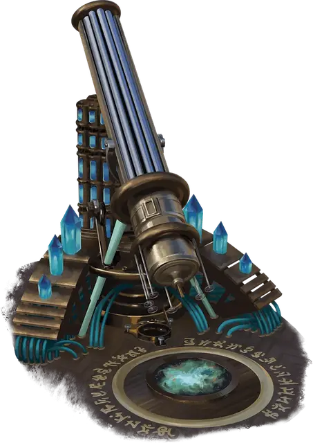

Телескопический транспортёр
Telescopic Transporter
Чудесный предмет, легендарный

Рекомендованная стоимость от 50 001 зм
Этот огромный телескоп позволяет вам наблюдать удаленные небесные объекты, включая звезды, Дикий космос и явления Астрального моря, такие как города божеств или окаменелые останки мертвых богов.
Потратив 1 час на калибровку телескопа, вы можете попытаться отправиться на планету или тело небожителя, на которое в данный момент направлен телескоп. В конце этого часа совершите проверку Интеллекта (Магия) Сл 17. В случае успеха вы и восемь других согласных существ касающихся телескопа, а также всё, что они на себе несут или носят, безопасно телепортируется в незанятые пространства в предполагаемом пункте назначения. При провале вместо этого происходит сбой. Мастер совершает бросок по таблице «Неудачи при путешествиях с помощью телескопа», определяя или выбирая неудачу, что полезна для кампании
Неудачи при путешествиях с помощью телескопа
| к6 | Неудача |
| 1 | Путешественники оказываются дрейфующими в Астральном море. |
| 2 | Путешественники появляются на другом плане существования, определяемом случайным образом или выбранном Мастером. |
| 3 | Избыток космической энергии перегружает телескоп, в результате чего он взрывается. Каждое существо в пределах 60 футов от телескопа получает 8к6 урона некротической энергией. Любой гуманоид, переживший это повреждение, превращается в существо другого вида, как если бы на него было наложено заклинание реинкарнация [reincarnate]. |
| 4 | Существо из Астрального моря (например, гитъянки-рыцарь [githyanki knight]) появляется в пределах 60 футов от телескопа. Мастер определяет его поведение. |
| 5 | Путешественники оказываются на другой планете или теле небожителя в Диком космосе, ближайшему к месту их назначения. |
| 6 | Путешественники прибывают в пункт назначения, но каждый из них кажется покрытым безвредной слизью. |